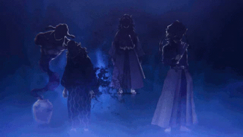
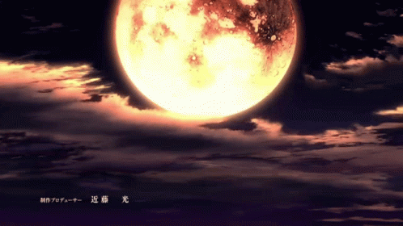

The Demons & Pillars

- The Origin of Demons: Muzan is the first demon, having gained his powers through a unique
transformation. His existence is the reason for the demon plague that afflicts humanity, making
him the source of the problems faced by the protagonists. He directly opposes the main character,
Tanjiro Kamado, and his allies. Muzan’s actions set the stage for their journey, as they seek to
eliminate demons and find a cure for Tanjiro’s sister, who has been turned into a demon. Muzan
is highly intelligent and strategic, often manipulating others to achieve his goals. He uses
subordinates, like the Twelve Kizuki, to carry out his plans while maintaining a sense of distance
and control. His character explores themes of power, immortality, and the consequences of one’s
choices. Muzan’s relentless pursuit of perfection and control highlights the darkness that can
arise from ambition. Through his actions and the challenges he poses, Muzan pushes the
heroes to grow, evolve, and confront their own fears and limitations.
- 
In Demon Slayer, the Upper Moons, a group of powerful demons serving Muzan Kibutsuji, play significant roles in the narrative. Each Upper Moon serves as a formidable adversary for the Demon Slayer Corps, providing major challenges that test the protagonists' skills and resolve. The Upper Moons are complex characters with unique backstories and motivations. Their individual histories often reveal tragic elements, adding depth to the narrative and highlighting themes of loss and transformation. They showcase the extreme abilities and powers of demons, illustrating the heightened stakes in the battle between the Demon Slayer Corps and Muzan’s forces.The Upper Moons represent the hierarchy within Muzan’s ranks, emphasizing his authority and the dynamics of fear and respect among demons. Their interactions with Muzan highlight their desire for his approval and the consequences of failing him. The Upper Moons embody various themes, such as the consequences of power, the nature of humanity, and the struggle against one's inner demons, enriching the overall narrative.

- In Demon Slayer, the Hashira or Pillars, are the elite members of the Demon Slayer Corps, each representing a specific style of swordsmanship and embodying unique qualities. The Hashira are the strongest demon slayers, tasked with taking down powerful demons, including the Upper Moons. Their skills and techniques are vital in battles against formidable foes. Many Hashira play a mentoring role for the younger demon slayers, particularly for Tanjiro and his friends. They provide guidance, training, and wisdom, helping them grow both as fighters and individuals. Each Hashira has a unique backstory that adds depth to their character. Their struggles, motivations, and personal tragedies often parallel the main themes of the series, such as loss, redemption, and the burden of responsibility. The Hashira embody various virtues, such as bravery, loyalty, and sacrifice. Their interactions and dynamics showcase the ideals of the Demon Slayer Corps and highlight the importance of camaraderie in the fight against demons. As the most skilled fighters, the Hashira symbolize hope for humanity in the ongoing battle against demons. Their presence reassures others and inspires courage in the face of overwhelming odds.